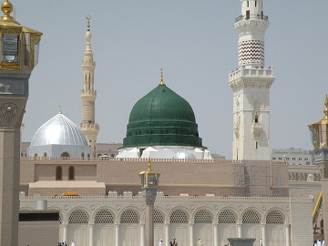
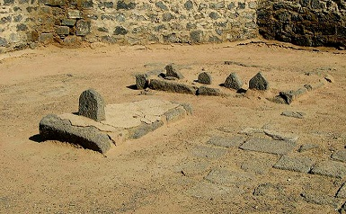
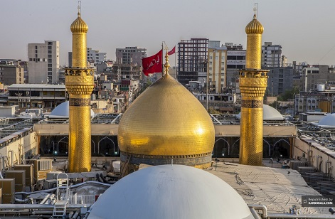
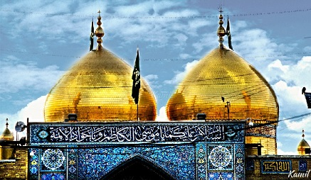
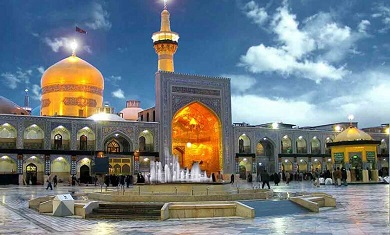
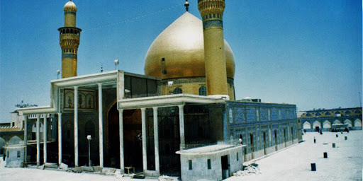

| Name |
Place Name |
Burial Place Photo |
| Hazrat Muhammad (PBUH) | Medina - Saudi Arabia |  |
| Hazrat Fatima (PBUH) | Baqih - Saudi Arabia |  |
| Hazrat Imam Ali (PBUH) | Najjaf - Iraq |  |
| Hazrat Imam Hassan (PBUH) | Baqih - Saudi Arabia | |
| Hazrat Imam Hussain (PBUH) | Karbala - Iraq |  |
| Hazrat Imam Zain-ul-Abideen (PBUH) | Baqih - Saudi Arabia | |
| Hazrat Imam Muhammad Baqir (PBUH) | Baqih - Saudi Arabia | |
| Hazrat Imam Jaffar Saddiq (PBUH) | Baqih - Saudi Arabia | |
| Hazrat Imam Musa Kazim (PBUH) | Kazmain - Iraq |  |
| Hazrat Imam Ali Raza (PBUH) | Mashhad - Iran |  |
| Hazrat Imam Muhammad Taqi (PBUH) | Kazmain - Iraq | |
| Hazrat Imam Ali Naqi (PBUH) | Sammara - Iraq |  |
| Hazrat Imam Hassan Askari (PBUH) | Sammara - Iraq | |
| Hazrat Imam Mehdi (PBUH) | In Occultation |  |